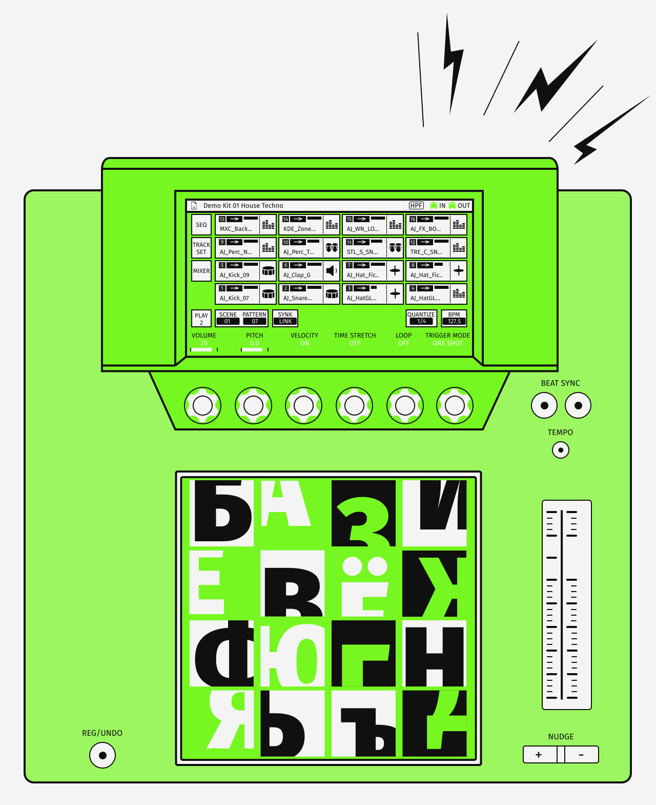
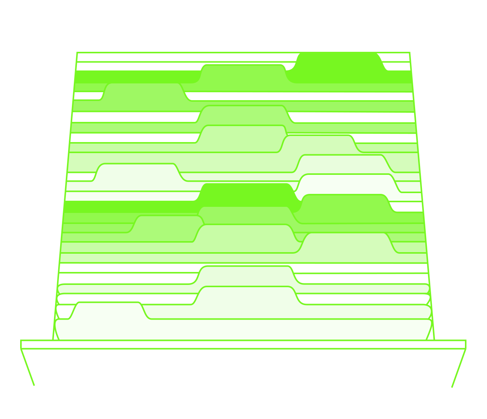

Fira Sans
История
Буквы
Шрифт создан Эриком Шпикерманноми студией Carrois Type Design в 2013 году.
Fira Sans — это адаптация шрифта FF Meta, который оптимизировали для чтения на маленьких экранах.

Начертания
